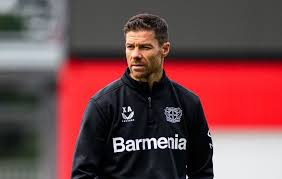

Jakarta, CNN Indonesia -- Dua pelatih top disebut menjadi kandidat pelatih baru Real Madrid, yakni Xabi Alonso dan Jurgen Klopp. Menyusul kabar Carlo Ancelotti telah sepakat untuk meninggalkan Real Madrid akhir musim ini, pihak El Real disebut-sebut sedang bekerja keras mencari pengganti pelatih asal Italia itu. Kontrak Ancelotti sebenarnya masih bertahan hingga 2026, namun pelatih 65 tahun itu memilih mundur setelah Real Madrid terpuruk musim ini. Ancelotti disebut akan menjadi pelatih timnas Brasil.
"Kami memiliki gentleman's agreement, dan jika ada tim yang pernah diperkuatnya [tertarik], kami bisa duduk bersama," ucap Carro dikutip dari ESPN. Namun, masalah kemudian muncul karena internal Real Madrid tidak sepenuhnya setuju dengan Xabi Alonso. Dikutip dari Sport, meski Perez menginginkan Alonso, tapi sejumlah direktur dalam Madrid lebih menginginkan Jurgen Klopp sebagai pelatih baru. Setelah meninggalkan Liverpool, Klopp saat ini berstatus Kepala Sepak Bola Global di Red Bull, perusahaan yang membawahi sejumlah klub ternama, termasuk RB Leipzig di Bundesliga Jerman. Klopp diyakini menjadi sosok yang tepat untuk memimpin perubahan besar-besaran di Real Madrid, sama yang seperti dilakukannya di Liverpool.